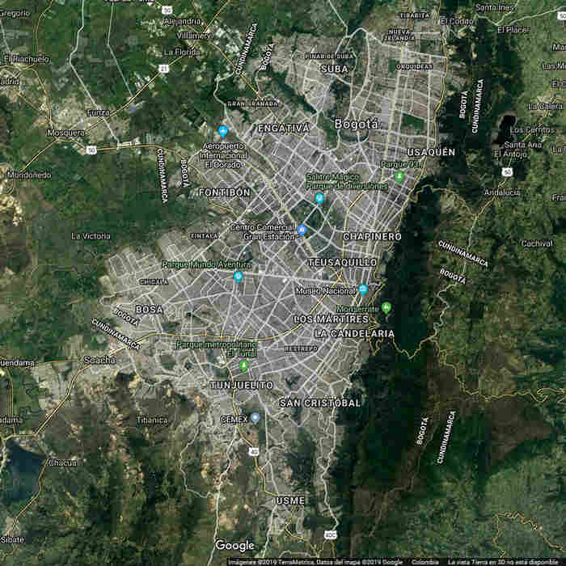

SCOOTPLOITATION : deambulación urbanistica disruptiva Así que se preguntan de que se trata exactamente con Scootploitation, esa deambulación virtual basada en la realidad, esa gamificación de un paseo real. De hecho, Scootploitation son narrativas digitales interactivas. Hay que ver esas narrativas como extensiones agregadas al paseo, y como applicaciones para considerar el paseo según varias opciones. La ciudad considerada como un background en el cual se desarollan las deambulaciones. Las narrativas que propondra Scootploitation son un experimento que considera la premisa que el paisaje lo hace el que deambula, que la ciudad no existe en sí sino según la focal de la mente del paseante. Nos inspiramos en las teorías de la Deriva (técnica de paso ininterrumpido a través de ambientes diversos. Para saber más : teoria de la deriva en Arte Nómada) y la Psicogeografía (entender los efectos y las formas del ambiente geográfico en las emociones y el comportamiento de las personas) de la Internacional Letrista. Scootploitation utilisa el entorno del videojuego para inmergirse en la realidad, con opciones de direcciones, elección de lugares de descanso, donde tomar un tinto, comer algo, facultad de "tomar fotos", "grabar videos", "grabar sonidos". A veces, para acceder a la sección siguiente del paseo el visitante tendra que responder a una pregunta (cultural, geográfica, historica etc...) ; en caso de no conocer la respuesta podra consultar unas pistas. Abordemos la ciudad ! Pués, antes de abordar lo que sea, consultemos la siguiente página... En esa página les mostraremos lo que pueden encontrar en nuestras deambulaciones. Unas palabras mas : porque el momopatín ? El monopatín es como un barco navegando por los andenes, los senderos, su movimiento tiene la fluidez que se adapta a los meandros de sus caminos (virtuales) del deseo (Camino del deseo en Wikipedia).
Para descubrir más, entrar en el concepto, sumergirse en la acción :

+ Ampliar Letras | - Disminuir Letras
|